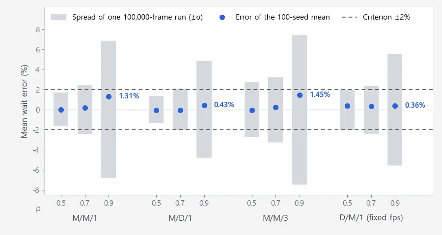

Before trusting the simulator's answer
What needed checking
The frame backlog simulator always returns a number once you give it settings. If it handled one event in the wrong order or miscounted the workers, the result table would still look plausible. To trust an answer like “memory runs out in so many minutes”, I first had to check that the tool producing it is right. Why a slightly slow stage piles up without end is covered in When drawing cannot keep up with the camera.
Where the answer is known: the process-all stage right after the camera
Queueing theory has formulas for the mean wait. They hold only when arrivals are simple and the queue has no limit. In the app, the place that meets these conditions is a stage right after the camera that queues every frame. Its arrivals are the camera's own (Poisson or fixed fps), and no frame is dropped.
// Process-all stage right after the camera
// s: mean processing time, c: workers, ρ = λ·s/c
// ca2, cs2: squared CV of arrival gap and processing time (Poisson 1, fixed fps 0, exp 1)
M/G/1 Wq = ρ·s·(1+cs2) / (2·(1-ρ)) // Poisson arrivals, c = 1. Exact
D/M/1 σ = exp(-(1-σ)/ρ), Wq = σ·s/(1-σ) // fixed fps + exp processing, c = 1. Exact
M/M/c Wq = C(c, λ·s) / (c/s - λ) // Poisson + exp, c > 1. Exact (C: Erlang C)
G/G/1 Wq ≈ ρ/(1-ρ) · (ca2+cs2)/2 · s // other, c = 1. Kingman approx.
G/G/c Wq ≈ Wq(M/M/c) · (ca2+cs2)/2 // other, c > 1. Allen-Cunneen approx.For a stage fed by the previous stage's output, the distribution of arrival intervals cannot be written as a formula. A dropping policy puts a cap on the queue length, which breaks the assumption of the formulas above. So those stages get no analytic value, only the simulated one.
What to compare: the mean wait
What these formulas give directly is the mean time spent waiting in the queue (Wq). Tail values such as p99 do not come out of them. So from the simulation I take the mean time each frame waited before processing started, and compare like with like. Comparing total latency, with processing time added, dilutes the error. For M/D/1 at ρ 0.5 the mean wait is 5 ms and processing is 10 ms, so a 1% error in the wait shows up as only 0.33% in total latency.
Pass criterion: the mean of 100 seeds, not one run
The criterion is “mean wait error within 2% at ρ 0.9 or below”. Comparing one 100,000-frame run looks like enough, but changing only the seed moves the mean wait at ρ 0.9 by a one-run σ of 4.8–7.5%. Each frame's wait carries over from the frames before it, so even 100,000 frames contain far fewer independent samples. One run cannot resolve 2%.
So the same settings are run with 100 seeds, averaged, and the error of that mean is what gets judged. Four formulas (M/M/1, M/D/1, M/M/3, D/M/1) × ρ 0.5, 0.7 and 0.9, all with a mean processing time of 10 ms.

Result
All 12 cases met the criterion. The largest error was 1.45% for M/M/3 at ρ 0.9, then 1.31% for M/M/1 at ρ 0.9, and everything at ρ 0.7 or below was within 0.36%. At ρ 0.9, even the mean of 100 runs still moves by σ/√100, that is 0.48–0.75%.
A smaller version of the same comparison (200,000 frames × 3 seeds, within 3%) is in the unit tests, so CI reruns it on every push. The app's help also runs the same check with 10 seeds in about 10 seconds.
Where they should disagree
- ρ ≥ 1: the formula's answer is infinite, but a simulation run for a finite time always returns a finite number. So the app looks at ρ before running, marks the stage as growing without end, and does not compare it with a formula.
- ρ close to 1: the wait grows as 1/(1−ρ), and so does the run-to-run spread. One-run σ is 1.3–2.8% at ρ 0.5 and 4.8–7.5% at ρ 0.9. The criterion stops at ρ 0.9, and a single run in the result table can be off by this much.
- Approximations: with fixed fps and exponential processing, the Kingman approximation gives 5.0 ms at ρ 0.5 while the exact D/M/1 value is 2.55 ms; at ρ 0.9 it is 45.0 ms against 41.8 ms. When arrivals are regular the approximation overstates the wait, so a negative error against an “approx.” value in the result table is not an engine bug. Fixed fps is a common case, so it was checked separately against the exact D/M/1 formula, within 0.36%.
- Where no formula exists (dropping policies, later stages): with fixed intervals and fixed processing times, a test compares the engine with a simple loop written separately from it, and checks that served, dropped and maximum queue counts match for all five policies.
Takeaway
Before trusting what a measuring tool says, check the tool itself on cases where the answer is known. When setting the criterion, look at the quantity being compared and at how much one run moves. If one run moves more than the criterion, a single comparison says neither pass nor fail. Also write down in advance where a mismatch is expected. Then a gap against an approximation is not mistaken for a bug, and a gap against an exact formula is not waved away.
To run it yourself, press “Run accuracy check” in the help of the Frame backlog simulator, or run node tools/accuracy.mjs in the repository.
All numbers come from running the repository's scripts on synthetic settings (mean processing 10 ms). They are not measurements from equipment.